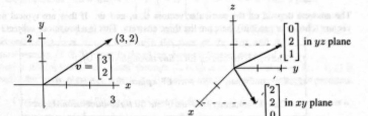

A vector with two components corresponds to a point in the xy plane. The components of v are the coordinates of the point: x = v1 and y = v2. The arrow ends at this point (v1, v2), when it starts from (0, 0). Now we allow vectors to have three components (v1, v2, v3).
The xy plane is replaced by three-dimensional xyz space. Here are typical vectors (still column vectors but with three components):
The vector v corresponds to an arrow in 3-space. Usually the arrow starts at the "origin", where the xyz axes meet and the coordinates are (0, 0, 0). The arrow ends at the point with coordinates v1, v2, v3. There is a perfect match between the column vector and the arrow from the origin and the point where the arrow ends.
The vector (x, y) in the plane (with 2 numbers) is different from (x, y, 0) in 3-space !

Figure 1.2: Vectors x y and x y z correspond to points (x, y) and (x, y, z) in 2D and 3D.
Space saver : From now on v = 1 1 −1 is also written as v = (1, 1, −1).
The reason for the row form (in parentheses) is to save space. But v = (1, 1, −1) is not a row vector! It is in actuality a column vector, just temporarily lying down. The row vector 1 1 −1 is absolutely different, even though it has the same three components. That 1 by 3 row vector vT = 1 1 −1 is the "transpose" of the 3 by 1 column vector v.
In three dimensions, v + w is still found a component at a time. The sum has components v1 + w1 and v2 + w2 and v3 + w3. You see how to add vectors in 4 or 5 or n dimensions. When w starts at the end of v, the third side is v + w. The other way around the parallelogram is w + v. Do the four sides all lie in the same plane ? Yes. And the sum v + w − v − w goes completely around to produce the _____ vector.